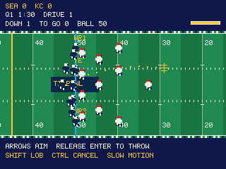

Every yard matters.
Full 11-player units, three receiving targets, blockers, coverage, timed kicks, and four quarters to decide it.
TI-NSPIRE CX II / NDLESS / V1.2.0 PREVIEW
Call the play. Build your roster. Take your team all the way to the TI Bowl. Arcade football, made for your calculator.
Source available · Calculator build requires Ndless SDK

YOUR TEAM. YOUR SEASON.
Play a 17-week schedule. The top seven teams from each conference enter the playoffs, with a bye for each top seed. Win your conference, then finish the job in the TI Bowl.
Real club names. Original pixel uniforms and fictional player rosters. A custom 32-team league, not the NFL schedule.
MORE WAYS TO MOVE THE CHAINS
Four runs. Six passing concepts. Drop back, hold Enter to aim, and release to throw. Lead your receiver or loft the ball over the rush. Then put the game on your kicker’s timing.
Full 11-player units, three receiving targets, blockers, coverage, timed kicks, and four quarters to decide it.
Start with three random stars. Build toward twelve through free agents and a three-round offseason draft. Scout star ratings, develop real positions, and manage a 200M salary cap.
Weekly results, conference seeds, a playoff bracket, and the TI Bowl. Save your progress between plays.
READY TO CALL THE FIRST PLAY?
You need a TI-Nspire CX II with a compatible Ndless installation. Releases currently provide source code; a verified calculator binary is not included.
Arrows move and select. Enter snaps and confirms. Hold Enter with the arrows to aim, then release to throw. Ctrl cancels aiming or opens Special Teams. Shift sprints or adds a lob when you release Enter. Esc pauses.